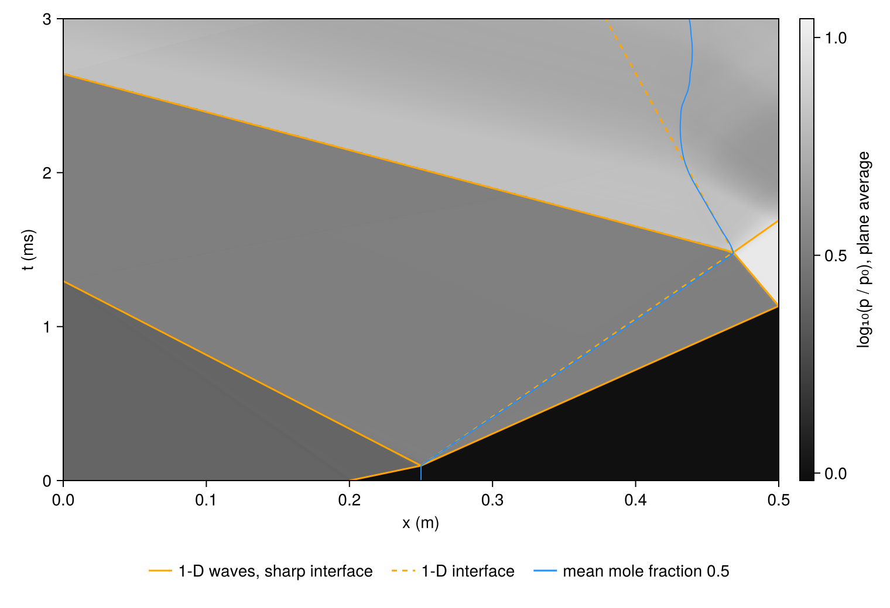
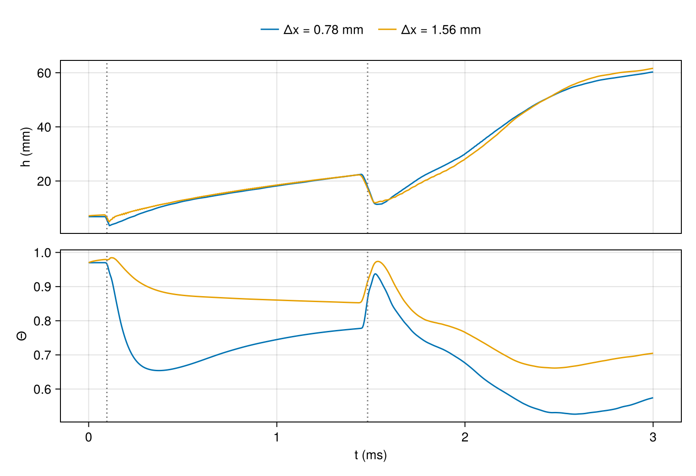
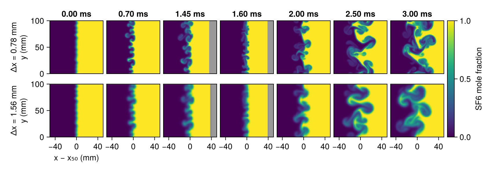

Reshocked mixing layer
A shock that crosses a perturbed interface between two gases leaves the perturbation growing, and Richtmyer–Meshkov instability follows a single mode of it from air into SF6 through its linear stage. In a shock tube closed at the far end, the shock transmitted into the heavy gas reflects from the end wall and crosses the interface a second time, now from the heavy gas into the light one. This reshock gives the layer a second and larger velocity jump at a time when its perturbations have grown to a finite amplitude. Vetter and Sturtevant (1995) studied an air/SF6 interface in a shock tube at Mach 1.5 with reshock from the end wall.
This page calculates a layer between the same two gases, struck by a shock of the same strength, in two dimensions and with a band of modes on the interface. It follows the layer through the first shock, through reshock, and through the waves that pass between the layer and the end wall afterwards, and asks how the layer grows in each of these stages. The waves are compared with the exact solution in one dimension, and the width of the layer and its molecular mixing with a second calculation on a grid twice as coarse, to show what the calculation settles and what it does not.
The script takes its settings from the command line: ny, the nodes across the tube, which sets the spacing $\Delta x = L_y/n_y$ of the main run, with $L_y$ the width of the tube, and of a second run at twice that spacing; Mach, the Mach number of the incident shock; tfinal, the time at which the runs end; and seed, which draws the phases of the interface's modes.
using CompactLES # re-exports MPI
using CompactLES.Regions
MPI.Initialized() || MPI.Init(threadlevel=:funneled)
opt = CompactLES.script_args(ARGS, (ny = 128, Mach = 1.5, tfinal = 3e-3, seed = 1,
smoke = false))
grids = (opt.ny, opt.ny ÷ 2)Gases and waves
The air and the SF6 start at 295 K and atmospheric pressure. The incident shock heats the air to 390 K, and the shock reflected from the end wall heats the SF6 to 374 K. IdealMixture holds each species at its room-temperature heat capacities. With the temperature-dependent heat capacities of Nasa9Mixture, the one-dimensional wave speeds below change by at most 2.4 m/s, and by at most 1.7%, for the slow shock reflected from the end wall; the velocity jumps and Atwood numbers change by less than 0.3%.
For a plane, sharp interface the waves follow from three Riemann problems, each solved by riemann_interface. When the incident shock arrives, the shocked air meets SF6 at rest: a shock is transmitted into the SF6, another is reflected into the air, and the interface moves off at the contact velocity, the velocity jump $\Delta u$ of the first shock. When the transmitted shock reaches the end wall, the shocked SF6 meets its own mirror image, whose velocity is reversed, and a shock is reflected that brings the gas to rest. When that shock reaches the interface, the gas at rest behind it meets the shocked air: a shock is transmitted into the air, a rarefaction is reflected into the SF6, and the interface takes a new velocity. The difference between the two interface velocities is the velocity jump of reshock. The Atwood number $A = (\rho_2 - \rho_1)/(\rho_2 + \rho_1)$, with $\rho_2$ the density of the SF6 and $\rho_1$ that of the air, is given below for the gases at rest and for the gases either side of the interface after each shock.
eos = IdealMixture(["Air", "SF6"])
p0, T0 = 101_325.0, 295.0
air = Prim(Y = mass_fractions(eos, "Air" => 1.0; basis = :mole), p = p0, T_ion = T0)
sf6 = Prim(Y = mass_fractions(eos, "SF6" => 1.0; basis = :mole), p = p0, T_ion = T0)
Lx, Ly = 0.5, 0.1
x_shock, x_interface = 0.20, 0.25
incident = shock_jump(eos, air, opt.Mach)
impact = riemann_interface(eos, incident.post, sf6)
t_impact = (x_interface - x_shock) / incident.shock_speed
t_wall = t_impact + (Lx - x_interface) / impact.right_speed
gas = impact.right
wall = riemann_interface(eos, gas, Prim(u = (-gas.u[1], 0.0, 0.0), p = gas.p,
T_ion = gas.T_ion, Y = gas.Y))
x_wall_meet = x_interface + impact.u_star * (t_wall - t_impact)
t_reshock = t_wall + (Lx - x_wall_meet) / (impact.u_star - wall.left_speed)
x_reshock = x_wall_meet + impact.u_star * (t_reshock - t_wall)
reshock = riemann_interface(eos, impact.left, wall.left)The incident shock moves at 516.5 m/s and sets the air behind it moving at 239.1 m/s, at 249.1 kPa. The time of each of the three Riemann problems and the velocities of its waves, in m/s, are
| event | time (ms) | transmitted wave | reflected wave | interface | $A$ after |
|---|---|---|---|---|---|
| first shock | 0.097 | shock, 241.1 | shock, −208.5 | 157.5 | 0.729 |
| end wall | 1.134 | shock, −90.9 | |||
| reshock | 1.483 | shock, −404.2 | rarefaction, 152.5 | −58.7 | 0.758 |
The interface and the reflected shock meet 32 mm from the end wall, and the interface then moves back toward the inflow. The velocity jump of reshock, 216 m/s, is larger than that of the first shock, 157.5 m/s. The Atwood number is 0.67 for the gases at rest, 0.73 for the gases either side of the interface after the first shock and 0.76 after reshock.
Tube
The tube is 0.5 m long and 0.1 m wide, and the third dimension is collapsed. The shock starts 0.20 m from the inflow end and travels toward increasing $x$; the mean position of the interface is at 0.25 m and the end wall, a SlipWallBC, at 0.5 m. Across the tube the faces are periodic, so the calculation has no side walls and no boundary layers on them.
The shocked air enters at $x = 0$ through an NSCBCInflowBC, which relaxes the velocity, temperature and composition of the entering gas toward a target state and lets waves traveling upstream leave. The gas behind each wave that leaves through the face differs from the target before it, so the target, a function of position and time, switches as each one leaves: to the air behind the reflected shock at 1.30 ms, and to the air behind the shock transmitted at reshock at 2.64 ms. The times come from the one-dimensional solution. In the Richtmyer–Meshkov instability tutorial, the interface speeds up when the target does not switch.
Multimode displaces the interface by a sum of the modes with 4 to 12 waves across the tube, wavelengths from 8.3 to 25 mm, of equal amplitude and with phases drawn from seed; the root-mean-square displacement is 0.5 mm. The 1 in Slab is the first coordinate, along the tube. Across the displaced interface the two gases blend by volume along an error function, through a Layer whose width makes the thickness of the blend, the difference in composition divided by its largest gradient, 5 mm. That is the thickness of the layer in the experiment of Collins and Jacobs that the tutorial repeats. The thickness is set in meters rather than in cells, so both grids start from the same layer. The incident shock is spread over the default three cells.
t_reflected = t_impact + x_interface / abs(impact.left_speed)
t_retransmitted = t_reshock + x_reshock / abs(reshock.left_speed)
inflow_state(x, y, z, t) = t < t_reflected ? incident.post :
t < t_retransmitted ? impact.left : reshock.left
modes, rms, delta = 4:12, 5e-4, 5e-3
eta = Multimode(lengths = (Ly,), modes = modes, rms = rms, seed = opt.seed,
mean = x_interface)
problem = Problem(
name = "air/SF6 Richtmyer–Meshkov with reshock",
eos = eos,
domain = ((0.0, Lx), (0.0, Ly), (0.0, 1.0)),
bcs = ((NSCBCInflowBC(incident.post; target = inflow_state), SlipWallBC()),
PeriodicBC(), PeriodicBC()),
ic = Layers(air,
Slab(1, hi = x_shock) => incident.post,
Layer(Slab(1, lo = eta), sf6; width = delta / sqrt(pi));
profile = :erf),
)Run
The main run has square cells at a spacing $\Delta x = 0.78$ mm: 10.7 cells per shortest wavelength and 6.4 across the initial blend. The second run has $\Delta x = 1.56$ mm. The numerics are the defaults. Every 5 µs each run records three averages over the planes of constant $x$: the pressure, the mole fraction $X$ of the SF6, and $X(1 - X)$. At seven times it also keeps the mole fraction field.
frame_times = [0.0, 0.7, 1.45, 1.6, 2.0, 2.5, 3.0] .* 1e-3
frame_times = filter(<=(opt.tfinal), frame_times)
function simulate(ny)
nx = round(Int, Lx / Ly * ny)
solver, Q = setup(problem, Numerics(n_global = (nx, ny, 1)))
t = Float64[]
p_mean, X_mean, XX_mean = Vector{Float64}[], Vector{Float64}[], Vector{Float64}[]
frames = []
x = Ref(Float64[])
y = Ref(Float64[])
sample = Callback(EveryTime(5e-6), function (solver, Q)
snap = field_snapshot(solver, Q; fields = (:X, :p))
X = snap[:X][:, :, 1, 2] # SF6 mole fraction
x[], y[] = snap.coords[1], snap.coords[2]
push!(t, solver.t)
push!(p_mean, vec(sum(snap[:p][:, :, 1], dims = 2)) ./ ny)
push!(X_mean, vec(sum(X, dims = 2)) ./ ny)
push!(XX_mean, vec(sum(X .* (1 .- X), dims = 2)) ./ ny)
if any(tf -> abs(solver.t - tf) < 2.5e-6, frame_times) &&
all(f -> abs(f.t - solver.t) > 2.5e-6, frames)
push!(frames, (t = solver.t, X = X))
end
nothing
end)
run!(solver, Q; tfinal = opt.tfinal, callback = sample)
return (; nx, ny, h = Ly / ny, x = x[], y = y[], t, p_mean, X_mean, XX_mean, frames)
end
runs = [simulate(ny) for ny in grids]Waves
The waves are found in the plane-averaged pressure. A shock is where the pressure crosses the middle of its one-dimensional jump, searching from the side the shock moves toward; the interface is where the plane-averaged mole fraction $\langle X \rangle$ of SF6 first rises through one half, a position the figures call $x_{50}$. Each velocity is the slope of a straight line fitted to the positions over a window of time, chosen so that no other wave crosses the feature in it.

The figure shows the run at $\Delta x = 0.78$ mm, with the waves of the one-dimensional solution drawn over it. The fitted velocities are
| velocity (m/s) | $\Delta x = 0.78$ mm | $\Delta x = 1.56$ mm | 1-D |
|---|---|---|---|
| incident shock | 515.4 | 511.3 | 516.5 |
| shock transmitted into the SF6 | 241.0 | 240.9 | 241.1 |
| interface after the first shock | 158.7 | 157.6 | 157.5 |
| shock reflected from the end wall | −90.8 | −90.8 | −90.9 |
| shock transmitted into the air at reshock | −403.8 | −405.3 | −404.2 |
| interface after reshock | −64.2 | −60.9 | −58.7 |
The shocks travel at their one-dimensional speeds to within 1% on both grids, and the reflected shock meets the layer where and when it meets the sharp interface. After the first shock, $x_{50}$ moves at the contact velocity to within 0.8%. After reshock it moves faster than the one-dimensional interface, by 4% at $\Delta x = 1.56$ mm and 9% at 0.78 mm.
The plane $x_{50}$ is not a material surface. After reshock the layer grows faster toward the air than toward the SF6: at $\Delta x = 1.56$ mm, the plane where $\langle X \rangle = 0.05$ moves at −78 m/s and the plane where it is 0.95 at −45 m/s. A position that follows the SF6 as a whole is that of a sharp interface holding the same volume of it, the end wall less $\int \langle X \rangle\, dx$; at $\Delta x = 1.56$ mm it moves at −58.4 m/s after reshock, within 0.5% of the one-dimensional interface.
From 1.9 ms the layer leaves the dashed line, which continues the interface velocity of reshock and leaves out the waves that follow it. The rarefaction reflected into the SF6 at reshock reaches the end wall, 32 mm away, after 0.2 ms, is reflected there, and returns to the layer; the layer decelerates, comes to rest near 2.3 ms and then moves slowly toward the end wall.
Width and mixing
The width $h$ of the layer is the distance between the planes where $\langle X \rangle$ is 0.05 and 0.95. The molecular mixing fraction
\[\Theta = \frac{\int \langle X (1 - X) \rangle\, dx} {\int \langle X \rangle \left(1 - \langle X \rangle\right) dx}\]
compares the mixed gas in the layer with the amount its mean profile would hold if every plane had a uniform composition: it is 1 for a layer mixed across each plane and 0 for gases interleaved without mixing. Both measures use the mole fraction, which for gases at a common pressure and temperature is the fraction of the volume each occupies. mix_width and molecular_mixing form the same kind of measure from the mass fractions, which differ for these gases, whose molar masses differ by a factor of five: a mass fraction of one half is a mole fraction of 0.17. Every node of a plane has the same weight in the average, since the grid is uniform and periodic across the tube.

The dotted lines mark the arrival of the incident shock and the reshock time of the one-dimensional solution. Each shock first compresses the layer, and its perturbations then grow. The calculation carries no molecular viscosity or diffusion: the gases mix through the artificial diffusivity and the filter, which act at the scale of the grid. The width at the start and just before the incident shock arrives is 6.8 and 6.7 mm at $\Delta x = 0.78$ mm and 7.1 and 7.3 mm at 1.56 mm, so neither grid spreads the initial blend before the shock arrives.
The growth rate of the width and the velocity of $x_{50}$, in m/s, fitted over four windows, are
| stage | t (ms) | $dh/dt$ at 0.78 mm | at 1.56 mm | $x_{50}$ at 0.78 mm | at 1.56 mm |
|---|---|---|---|---|---|
| before reshock | 0.98–1.38 | 9.6 | 8.8 | 157.4 | 157.0 |
| after reshock | 1.58–1.88 | 43.7 | 36.2 | −62.9 | −60.2 |
| deceleration | 1.98–2.28 | 51.2 | 56.1 | −22.0 | −18.2 |
| late | 2.38–3.00 | 17.4 | 20.1 | 10.3 | 18.6 |
and the width $h$ and $\Theta$ 50 µs before reshock, 100 and 500 µs after it, and at the end of the run are
| $\Delta x$ | 1.43 ms | 1.58 ms | 1.98 ms | 3.00 ms |
|---|---|---|---|---|
| 0.78 mm | 22.3 mm, 0.78 | 12.6 mm, 0.88 | 29.3 mm, 0.68 | 60.3 mm, 0.57 |
| 1.56 mm | 22.3 mm, 0.85 | 13.0 mm, 0.95 | 27.4 mm, 0.77 | 61.6 mm, 0.70 |
Before reshock the two grids give the same width: 22.3 mm on both at 1.43 ms, growing at 9.6 and 8.8 m/s over the 0.4 ms before reshock. The sawtooth on the curve at $\Delta x = 1.56$ mm, about 0.1 mm root mean square, has the period, about 10 µs, in which the layer moves one cell along the grid.
Over the 0.3 ms after reshock the layer grows at 43.7 m/s at $\Delta x = 0.78$ mm and 36.2 m/s at 1.56 mm, four to five times its rate before reshock. With the velocity jump and the Atwood number of reshock, $(dh/dt)/(A \Delta u)$ is 0.27 and 0.22. The grids then differ more in when the layer grows than in how far: the finer grid leads by 2 mm (7%) at 2.0 ms, and at 3 ms the widths are 60.3 and 61.6 mm, within 2%. A growth rate fitted over a fixed window after reshock differs between the grids by up to 17% of the fine grid's rate, and these grids do not settle it.
Of the four windows, the layer grows fastest between 2.0 and 2.3 ms, at 51 and 56 m/s, while it decelerates. At 2.13 ms, during the deceleration, the plane-averaged pressure is 590 kPa 5 mm on the air side of the layer and 479 kPa 5 mm on the SF6 side. The pressure falls from the light gas to the heavy one, so the deceleration is in the sense that is Rayleigh–Taylor unstable. At 2.68 ms the difference has reversed, 505 against 559 kPa, and from 2.4 ms the layer grows at 17 to 20 m/s.
The molecular mixing fraction is not settled. The first shock lowers $\Theta$ as the perturbations grow, to 0.65 by 0.4 ms at $\Delta x = 0.78$ mm and more slowly to about 0.85 at 1.56 mm; at 0.78 mm it then recovers to 0.78 by reshock. Reshock raises it on both grids for a short time before it falls again. It is lower at $\Delta x = 0.78$ mm than at 1.56 mm at every time after the first shock, by as much as 0.2 at 0.4 ms, and at 3 ms it is 0.57 against 0.70.
Images
The SF6 mole fraction on both grids at seven times, in a window 100 mm long centered on $x_{50}$; gray is beyond the end wall.

By 0.70 ms the modes have grown into spikes of SF6 in the air, rolled up at their tips. At 1.60 ms, just after reshock, the layer is compressed. From 2.0 ms it grows toward both gases, with rolled-up structures on the SF6 side as well as on the air side, and the structures merge into fewer and larger ones. The two grids show the same arrangement of structures through 1.60 ms and different ones from 2.0 ms. At 3 ms the run at $\Delta x = 0.78$ mm holds filaments of each gas a few cells thick that the run at 1.56 mm does not have.
What this checks
- The shocks of the first impact, of the reflection from the end wall and of reshock travel at the speeds of the one-dimensional Riemann solutions to within 1% at $\Delta x = 1.56$ and 0.78 mm.
- The layer moves at the contact velocity after the first shock. After reshock the plane where the mean mole fraction is one half drifts as the layer grows unevenly, and at $\Delta x = 1.56$ mm the volume of SF6 moves at the contact velocity to within 0.5%.
- Before reshock the width of the layer is the same on both grids. After reshock the width differs by up to 7% between them, and the growth rate over a fixed window by up to 17%; the widths at the end of the run agree to 2%.
- The molecular mixing fraction is lower on the finer grid at every time after the first shock, by as much as 0.2, and is not settled on these grids.
- The layer grows fastest while the waves reflected from the end wall decelerate it with the pressure higher on the air side.
The code that reduces the runs to the figures and the numbers quoted is left out of this page and shown on the page of the complete script.
The figures on this page were computed at commit 671fb0f on 2026-10-06, in 6 min, by julia --project=docs -t 8 examples/shock_tube.jl.
This page was generated using Literate.jl.